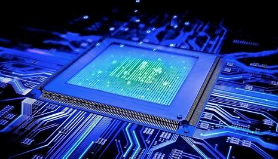

STIMIK Catur Sakti Kendari
The Spirit Of Education
 Sistem Komputer adalah kumpulan perangkat-perangkat komputer yang saling berhubungan dan berinteraksi satu sama lain untuk melakukan proses pengolahan data, sehingga dapat menghasilkan informasi yang diharapkan oleh penggunanya.Dapat disimpulkan bahwa sistem komputer merupakan hubungan antar komponen untuk melakukan proses olah data demi menghasilkan informasi bagi pengguna. Apabila perangkat keras berfungsi dengan baik, maka perangkat lunak dan brainware juga akan bekerja secara maksimal. Namun jika salah stau perangkat rusak, maka proses olah data dan berjalannya sistem komputer akan terganggu.
Penjelasan dari keempat fungsi sistem komputer adalah tersebut adalah sebagai berikut: Fungsi sistem komputer yang pertama adalah penyimpanan data output. Data output ini merupakan hasil pengolahan data mentah oleh memori komputer. Sistem komputer memiliki peranan untuk mengolah data mentah yang di input oleh pengguna.